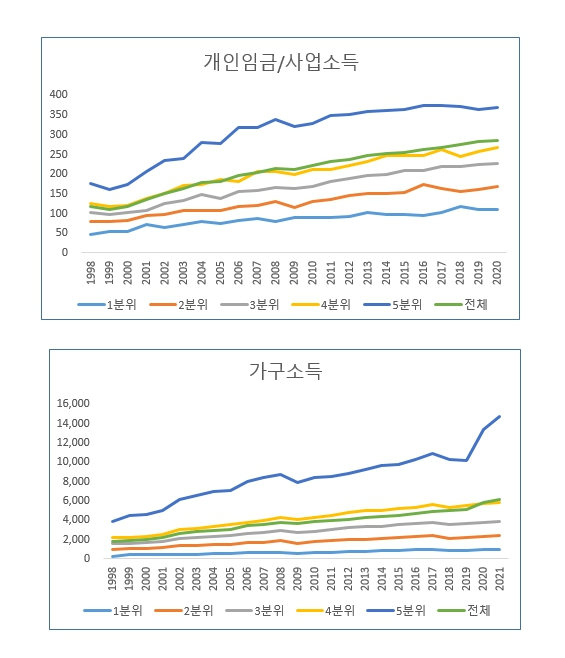

박영삼의 통계로 보는 노동
외환위기 이후 소득격차, 개인 간 줄고 가구 간 악화
한국노동패널 분석 결과 … 취업자 많은 고소득 가구, 자산 이익도 몰려
997년 말 외환위기가 발발한 지 벌써 25년이라는 세월이 흘렀다. 외환위기는 대한민국 역사에서 경제적 측면의 가장 큰 환란이었다. 고도성장 성공 신화에 취해 세계화를 향해 달리던 재벌 대기업들의 무리한 차입경영과 확장투자가 국가부도 사태까지 몰고 왔다. 갑자기 들이닥친 달러 기근 상황을 해결하기 위해 온 국민들이 고금리·긴축재정·대량해고·구조조정을 감당해야 했다.
그 이후 25년은 한 세대에 걸친 시간이다. 그 시절을 온몸으로 겪었던 중년 노동자는 이제 황혼을 맞았고, 그때 태어났던 아이는 성인이 됐다. 그리고 당시 중·고교에 다니던 청소년들은 이제 40대 초·중반의 나이가 됐다.
이 시기의 변화를 고스란히 담고 있는 단일한 통계자료가 한국노동연구원의 노동패널이다. 한국노동패널은 우리나라의 개인과 가구의 생애에 걸친 변화를 추적하기 위해 1998년에 처음으로 구축돼 올해로 25년째를 맞고 있다. 1998년 첫 조사 때 5천가구(가구원수 1만3천319명)가 표본으로 선정돼 이 중에서 2021년까지 24년간 조사가 지속된 가구는 3천161가구(가구원수 1만1천838명)다. ’98통합표본’으로 불리는데 이들은 제주도를 제외한 도시가구들을 대표하는 표본이다. 여기에 2009년과 2018년에 새로운 표본을 추가해서 전국의 일반가구를 모두 포괄하게 됐는데, 1998년 이후 전 기간을 동일가중치로 확인하기 위해서는 원표본만 대상으로 분석하기로 한다. 표본의 마모가 심한 단점이 있기는 하지만 전 기간을 볼 수 있다는 점에서 의미를 찾을 수 있다. 분석에는 한국노동연구원이 패널데이터 원자료와 함께 제공하는 가구 연간총소득분위(세후)를 기준으로 활용했다.
고소득 가구, 소득·집값 가파른 상승
1998년 당시 우리나라 취업자 2천835만명의 개인 월평균 소득은 117만원이었다. 자영업자까지 포함한 수치다. 이러던 개인소득이 2021년에는 288만원으로 2.5배로 상승했다. 2008년 금융위기 이전까지는 개인소득 격차가 확대되는 시기였다. 그러나 2008년 금융위기 이후 개인소득 격차와 불평등은 점차 감소추세를 보였다.
하지만 가구소득의 방향은 이와는 달랐다. 2012년 이후에도 상위 20%의 소득증가는 지속됐고 격차는 계속 확대됐다. 1998년 이후 가구소득은 1천765만원에서 6천195만원으로 3.5배나 올랐다. 고소득 가구의 소득이 훨씬 크게 증가했기 때문이다. 결과는 가구소득 격차 확대다.

코로나 이후 개인소득과 가계소득 불평등 모두 증가한 것으로 나타나는데 가구소득 불평등 급등은 상위 20% 가구의 부동산소득 증가가 미친 영향도 크다. 2021년 상위 10%의 부동산소득(양도소득 포함)은 연평균 1천211만원에 달했다. 평균소득 대비 주택가격 배율은 2000년 3.9배에서 2021년 6.8배로 급등했다. 상위 20% 가구가 소유한 주택가격이 가장 크게 올랐다.
이처럼 최근 다시 개인소득과 가구소득의 불평등 흐름이 강화되고 있는 것에 대해 노동패널 원자료는 다음 두 가지 사실을 주목하게 한다.
첫째, 소득이 발생하는 취업자의 전반적인 구성이 상위소득 가구로 집중되고 있다는 점이다. 25년 전 외환위기 때는 취업가구원의 절반 이상(54.4%)이 소득 3분위 이하 가구의 구성원들이었다. 그러던 것이 2010년이 되면 3분위 이하 가구의 취업자 비중은 41.5%로 떨어지며, 2021년에는 취업자의 42,6%가 상위 20% 가구에 속한 것으로 나타난다. 분석에서 사용한 분위가 비균등화 세후총소득 기준이기 때문에 가구규모를 통제하지 않은 데 따른 영향도 있다. 하지만 1분위 가구의 가구원 비중은 13%이지만 취업자 비중은 4%에 불과하며 5분위 가구의 가구원 비중은 35%인데 반해 취업자 비중은 43%에 이른다. 그리고 이 갭은 해마다 계속 커지고 있다.
저소득층에겐 ’비혼’이 결과이자 원인
고령화로 인해 가구원이 적은 노인가구가 늘어나고 있는 것도 이유가 될 수 있지만, 청·장년들조차 일자리 접근성과 가구형성 여력이 전반적으로 하락하고 있다는 점을 주의해서 볼 필요가 있다.
1998년 외환위기 당시 15~19세이던 청소년들은 1979년부터 1983년까지 출생한 세대로 이른바 MZ세대의 제일 선두에 해당한다. 노동패널에는 1천448명이 포함돼 있다. 이들 중 2021년까지 조사에 참여한 가구원은 688명이었다. 고려대 노동문제연구소에서는 이들에 대해 소득분위별로 취업·결혼·실업 등과 같은 주요 생애사건의 확률과 평균 빈도를 계산했다. 취업의 경우 전 기간에 걸친 취업확률은 51%로 나타났다. 상위 20% 가구원은 56%인 반면 하위 20%의 취업확률은 38%로 크게 낮았다. 2021년 기준 취업률은 상위 20%는 89%에 이르는 반면 하위 20%의 취업률은 27%에 불과했다. 실업횟수는 하위 20% 가구 소속은 평균 0.8회를 경험한 것으로 나타났으나 상위 20% 가구원은 0.39로 훨씬 낮았다.
한편 결혼 비율은 상위 20%가 74%에 이르는 반면, 소득분위 순으로 4분위 53%, 3분위 55%, 2분위 38%를 나타냈다. 경제적 요인 때문에 결혼에 어려움을 겪지만 단독가구로 남게 되면 경제적 어려움을 더 크게 겪게 된다.
청소년기에 IMF 환란을 맞았던 이들 중에서 하위 40% 가구에 속한 비율은 33.9%였다. 하지만 2021년 현재 성인이 된 그들 중 하위 40% 가구에 남아 있는 비율은 11.0%에 불과하다. 새로운 가구를 구성하거나 독립하면서 처지를 개선했기 때문이다. 하지만 빈곤의 위험에 직면해 있는 다수의 어른과 새로운 어린 세대, 그리고 혼자로 남아 있는 IMF 키즈들이 여전히 있다. 그들에게는 지금이 25년 전 그때의 상황과 크게 다르지 않을지도 모른다.
고려대 노동문제연구소 노동데이터센터장 (youngsampk@gmail.com)